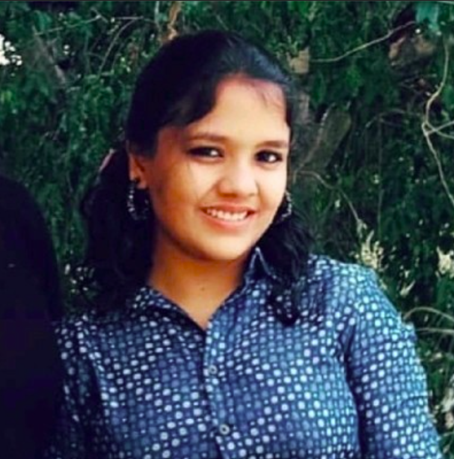
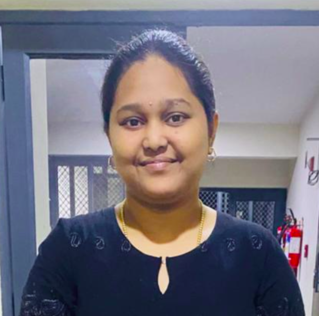
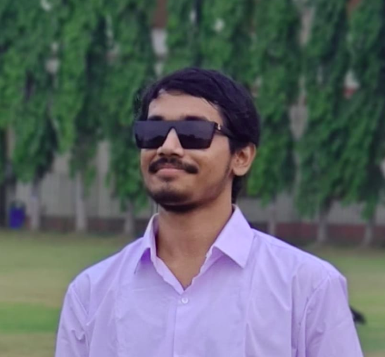
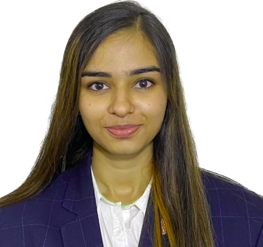
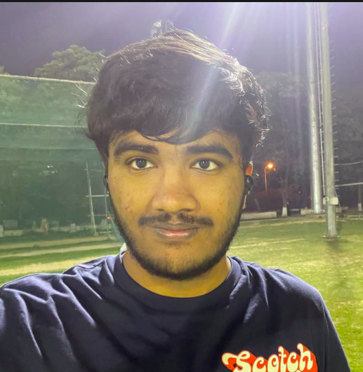

Current Students
Ph.D. Students

Nandhini (July 2025 – )

Annadanam Tiruvengala Sreedeepthi (Jan 2025 – )

Wanmathy (Co-guide: Prof. Saurav Prakash) (Jan 2025 – )
Masters by Research

Karthik Palaniappan (July 2025 – )

Anuska Roy (Jan 2026 – )

Shubhi Sushil Shukla (Jan 2025 – )
Project Associate

Suriya R S (June 2025 – )
2K to 4K state-of-the-art video superresolution for DCP cinema content.
Undergraduate Students
- Varad Bhatkar (May 2025 – ) – Training restoration networks to be contractive.
- Hrushikesh (May 2025 – ) – Gyroscope sensor based real-time video stabilization.
- Anupam (Jan 2025 – ) – Developing real-time state-of-the-art algorithms for video superresolution.
- Tanish Chudiwal (Sept 2024 – ) – Literature survey on real-time image superresolution.